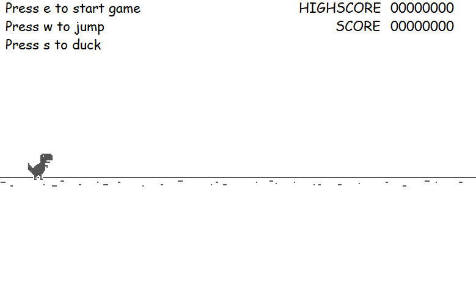

Lua-Based Chrome Dino Game
For the Software Engineering course at my university, I had an assignment to remake a game of my choice using Lua: the university provided a base starting engine to use for setting up the Lua bindings, but the game itself could only be constructed via Lua. I chose to remake the Chrome Dino game, as I was interested in seeing just how different it would be from making it in assembly.
Software
- Visual Studio
Repository
